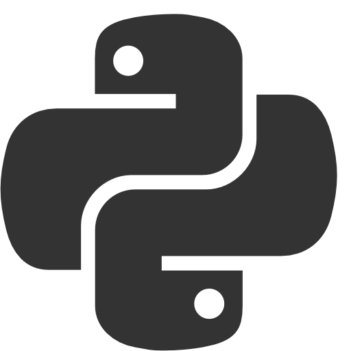

Introduction
Hi! My name is Leon Sovič and I am the author of this website. I made this website for the purpose of introducing myself as a software developer. This website is here so anyone can look through my work and my skill set. In the following sections you can see that and at the end there are my contacts and my links for more info.
My projects
SPA - Online portfolio
A static one page website (or SPA) that serves as a intruduction page for myself.
Build with HTML5, CSS3 and JavaScript.
Github Reposetory View Live Site
Webscraper with python
I made a webscraper with python and its BeautifulSoup library.
I made it with a tutorial but in another branch I used and modified it on my own.
Github ReposetoryTo-do list
I made a to-do list website that uses php as its backend and MySql for its database.
The first backend language that I learned is php so I am most familiar with it's basics and some more advanced parts of it.
MySql is also the first database that I have learned so I am most familiar with it.
Github Reposetory View Live SiteRobotics
This is code written in C that is used by Microsoft Robotics Dev Studio 4 for the RoboCup.
When I was in the robotics club at my school I was writing this code (about a year on and off), it is used for the virtual robot simulation.
Github ReposetoryAbout
I made this website so I can introduce myself as a software developer and show off my work and skills. As you can see in the projects section I am all around the place with software development. As of now I am focusing on web development.
I started off with non OOP in C++ (so basically C) in high school, I really liked it and was really good at it but I didn't have any motivation to go beyond what we were doing in school, by that I mean mostly OOP as I didn't have any use for it. The next year I started a bit of PHP on my own and I really like it, I could use it in a "useful" way. But I didn't continue and I also didn't learn HTML or CSS or JavaScript. The next year we had web development in school and there I learned HTML5 and CSS3 to a really good level and we also had PHP where I found it even more interesting with all the new knowledge about web development. Then I focused on learning PHP to a level where I felt comfortable programming with it on my own. In the meantime of these years (2. and 3. year of high school) I learned the basics of Python then some basics of Java and then the basics of JavaScript.
As of now I am trying to learn JavaScript at a higher level, I also did some tutorials for some MERN stack web apps, some Node.js and some ECMAScript 6. I am still working with PHP and MySql, where I am learning OOP in PHP and after that I am aiming to learn a PHP framework. In the future I am looking at some Python, where I would focus on data analysis and some more Java as I would need it in school/university.
Languages
The first language that I have learned is non OOP in C++ or C so I am most familiar with it. I have used it in robotics (simulation) and in a programming competition.
The first backend language that I have learned is php so I am most familiar with its basics and some more advanced parts of it.
 I know the main point of HTML and am good at it. I think of it as a necessary tool for web development.
I know the main point of HTML and am good at it. I think of it as a necessary tool for web development.
 Like HTML it's a common tool and part of the wider knowledge of web development that I have.
Like HTML it's a common tool and part of the wider knowledge of web development that I have.
 I know the basics of JavaScript and I am still learning it. I am trying to learn a bit more of backend JavaScript programming with Node.js.
I know the basics of JavaScript and I am still learning it. I am trying to learn a bit more of backend JavaScript programming with Node.js.
I know the basics but I am not confident in using Python on my own (without the help of the internet).
 Similar to my skill in Python, I am not confident in my skills in Java but I know some basics.
Similar to my skill in Python, I am not confident in my skills in Java but I know some basics.